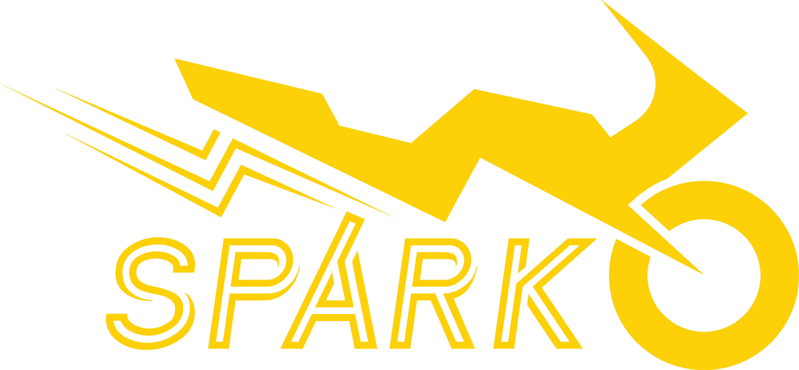

ZEUS, short for Zettawatt Equivalent Ultrafast Pulse Laser System, will be the most powerful
laser in the United States upon completion and opening in October 2023. Being National Science
Foundation funded, ZEUS will be used for a wide variety of research projects, meaning there
needs to be a way for researchers to submit proposals to use the laser. This is where I come in.
In May 2023 I joined the ZEUS team as a full stack development intern. My job is to develop crucial
functionalities of the Web Portal which will be used by researchers to submit proposals to use the
laser. So far, I have developed the user registration, verification, login, password reset, forgot
password, email change and other key authorization functionalities. I am currently building help
ticket system for the site, utilizing gmail's API to receive help inquires and generate tickets. I
am also developing a web calendar display for researchers and lab staff to view planned lab usage.
I have been working with one lead developer, meaning that I have been able to get my hands dirty
with the whole site. The site has been developed with Python Flask, SQL, Javascript, CSS, Globus,
HTML, and other tools. I have learned tons about web development and am excited to continue to learn.

Spark Electric Racing, Software Team
Software Developer
Winter 2023 - Present
Spark is an student run electric motorcyle team. I am currently working
on the software team, where I am developing a data interpretation program for
the bike's hardware. This program will be used to analyze the bike's performance
and make adjustments to the bike's settings. I am also getting involved with
building a web-scrapper tool for our business team to use to find potential sponsors.
Sense joining Spark I have found my community of fellow software devs at Michigan
and would highly recommend joining Spark or another Wilson Center Project Team to
any students. Also, I love the fact that I get to work on not just any electric vehicle,
but badass electric motorcycles, with FBS (the new bike being developed) being able to
go 0-60 in less that 4 seconds and reach speeds over 150 mph. My favorite memories has
got to be the seemingly endless supply of 'Starry' pop (soda for those outside of Michigan)
that we had due to a sponsorship with the company at the end of last semester.
Michigan Sport Consulting Group
Client Strategy Manager
Winter 2023 - Present
After several semesters with MSCG, I was selected to overhaul the clubs client aquisition
strategy, which had been lacking in recent years. Throughout the Winter 2023 semester I
, alonside my team, researched operations of other consulting clubs through interviews and
surverys. Also, my team and me dug through the data of past clients, documents kept during
past aquisition cycles, and interviewed past members of the club involved in client aquisition.
My team's findings are beggining to be implemented this summer as MSCG begins to reach out to
potential clients for the Fall 2023 semester.
Consulting Analyst
Fall 2021 - Winter 2023
I joined MSCG back during first semester of my freshman year, so I have been involved in this
student organization my entire college career. As such, I have been able to work on some very
cool projects. In Winter 2022, I worked on a project for the New York Islanders, who were concerned
about attracting fans from all around the New York Metropolitan area to their brand new stadium.
My favorite project was working with the owner of the West Michigan Whitecaps and Traverse City
Pitspitters minor league baseball teams. We conducted an Economic Impact Report for both teams,
analyzing the affect the teams have had on their respective communities through the use of economic
multipliers, and a spatial analysis of properties surrounding the stadium (I began development of
my python package SpatDAPy to support this project). I was able to present to both of these clients
which was a great experience.
MSCG has taught me tons about team work, management, public speaking, time management, and much much
more.
University of Michigan Recreational Sports
Personal Trainer
Fall 2022 - Present
I have been working as a Personal Trainer for the last year for the University of Michigan's Recreational
Sports Department. While here I have had the opprotunity to help more than 10 clients achieve there Fitness
goals. This job has tought me how rewarding teaching and mentorship are from the other side. I have been a
part of my clients' journeys to lose weight, gain muscle, and improve their overall health. Seeing my clients
become happier in there own bodies is something I will never get tired of. I have also learned a lot about
how to be a good teacher and mentor, and how to be a good listener.
Aside from being extremely personally rewarding, personal training has taught me how to manage my time like never
before. I have juggled 7 clients while taking intensive programming courses and been in clubs. I have learned how
to always be on, as my clients are free to text/call me whenever with questions, so I need to be able to instantly
go "trainer mode" and get to helping them - its kinda like when the bat signal goes up, when I receive that text or
call my clients are normally at the gym at that instant, and I have a commitment to help them out. This is a skill
I have brought with me to other jobs and commitments, the ability to always be on, and always be ready to help.
PyPI Published Package
Personal Project
Fall 2022 - Winter 2023
SpatDAPy is a python package I developed to help with spatial analysis. I developed this package while working on a
consulting project with the Sport Consulting Group. Essentially, my team was tasked with literally drawing straight
lines on a map for 1300+ addresses in Grand Rapids - that way we could analyse the properties surrounding a stadium
to see if there was any data that suggested property values increased as proximity to the stadium increased. I thought
that I could apply my skills in Python to make this task far far faster.
Starting off as a simple script, I quickly realized that I could make this into a package that could be used by anyone
could use. Basically, the package uses a class, which takes in a central address, a list of properties, and a radius.
The class then uses the GeoPy package and iteration to find the Straight Line Distance from all these properties to the
central address. Now, the user can input other data about these properties, then use a vairenty of funcitons to analyze the
surrounding area. This package cut 40+ work hours of plotting and statistical analysis into around 2 hours just to get the
property addresses and 1-2 hours to input manually the properties unfound by GeoPy. My next step is to be able to use the
central address and the radius to find all properties within that radius, then use the same functions to analyze the data.
MSCG has been using this package for the last year, and will continue to use it for all future economic analysis reports
they publish for clients. The package is available on PyPI, and I have built a Google Colab tutorial for anyone to learn
the package, however niche. I want to grow the project and create dev documentation in the near future.
Community Housing Network
CERA Team Lead
Spring 2022 - Summer 2022
I worked as a team lead for the Coronavirus Emergency Rental Assistance (CERA) program at Community Housing Network (CHN) after
being asked to return to the program as a Team Lead by my supervisor Christina Kronenberg. I was responsible for
both providing daily support to my team and ensuring that the team was following standards. I was also responsible for
managing my own case-load of 25 clients per week, all of whom were relying on me to help them pay their rent and utilities or
else faced eviction. This experience was my first real experience managing individuals, and I learned a lot about how to be
of assistance, but also not be looming over the shoulders of my team at all time.
CERA Specialist
Summer 2021
In this role I worked to divert the eviction of 25+ clients per week by providing them with financial assistance to pay their
rent and utilities. I was able to pay out over a quarter-million in assistance over the course of the summer, consistently meeting
weekly case goals. However, this job was highly challenging and emotionally stressful. I was working with clients who were facing
eviction if I messed up anything - I large responsibility to bear. I was taught that in a high stress job like this, organization
is the key to not screwing up. I became neurotic about documenting calls, emails, and other forms of communtication with
clients, their landlords, attorneys, courts, and more. I also furthered my ability to be empathetic and understanding of others,
which I believe has helped me greatly in my personal life and in team situations.